3 Acquiring Sentinel-2 Data
3.1 Overview
Sentinel-2 is an Earth observation mission from the Copernicus Programme that systematically acquires optical imagery at high spatial resolution (10 m to 60 m) over land and coastal waters. There are several ways to download Sentinel-2 data including using a QGIS plugion. In this chapter, you will learn how to use interfaces provided by Sentinels Scientific Data Hub to :
- search for area of interest,
- define area of interest,
- define specific data extraction criteria, and
- download select data.
3.2 Register and create a user account with Copernicus
- First, let us visit Copernicus Open Access Hub website by click on this url.
Copernicus Open Access Hub website appears on your default web browser as shown be below.
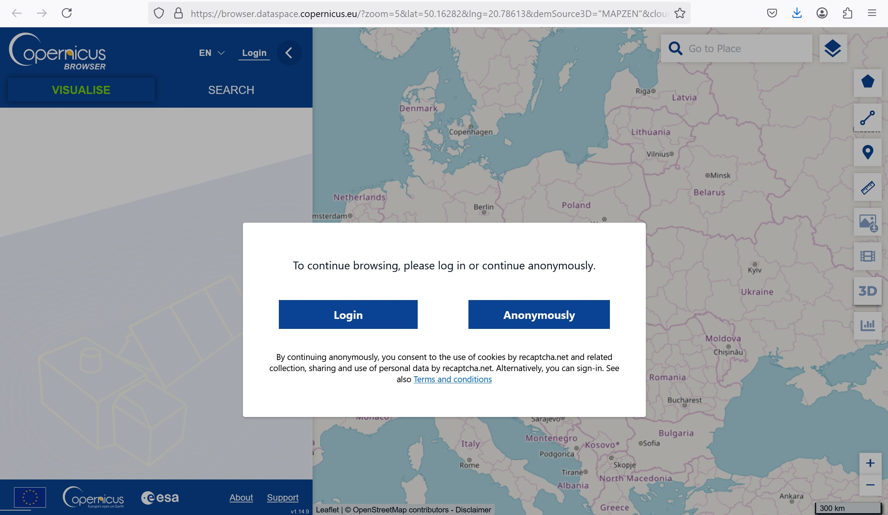
Next, you need to create an account with Copernicus Open Access Hub.
At the top-right corner, click the first button.
Next, click on Sign-up.
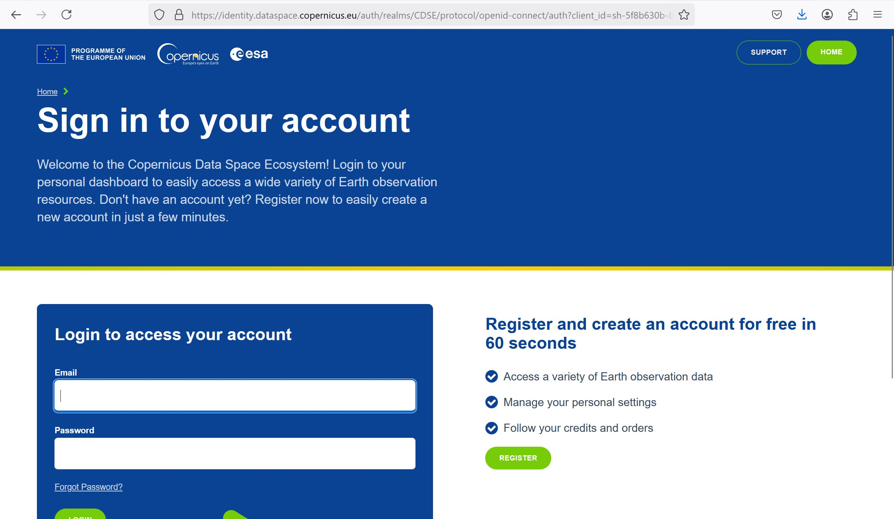
A new window open on your web browser.
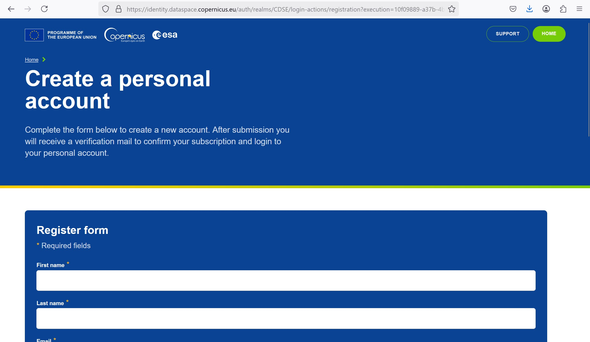
Complete the form by providing the necessary information.
Click on REGISTER button located at the end of of the page.
Within a second, you will receive a e-mail from Copernicus requesting you to validate your email. Complete the validation by responding to the e-mail.
Now, you are ready to download Sentinel-2 data from Copernicus Open Access Hub.
3.2.1 Step 1: Select area of interest
The easiest way to define the area of interest is by zooming into your area of interest.
- Navigate and zoom into Singapore.
Your screen should look similar to the screenshot below.
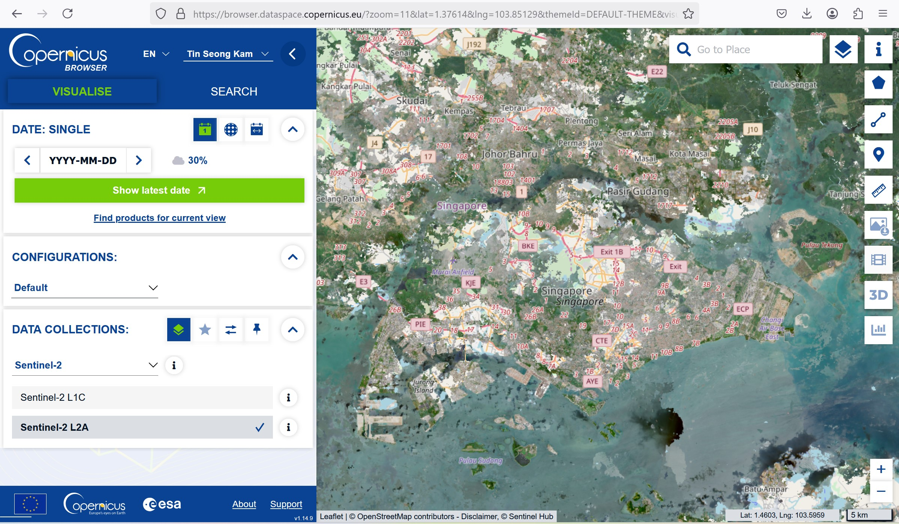
Different from EarthExplorer, Copernicus Open Access Hub uses OSM map as the reference map. In fact, there are three reference maps.
- Click on Map Layer button located on the upper right of the view window.
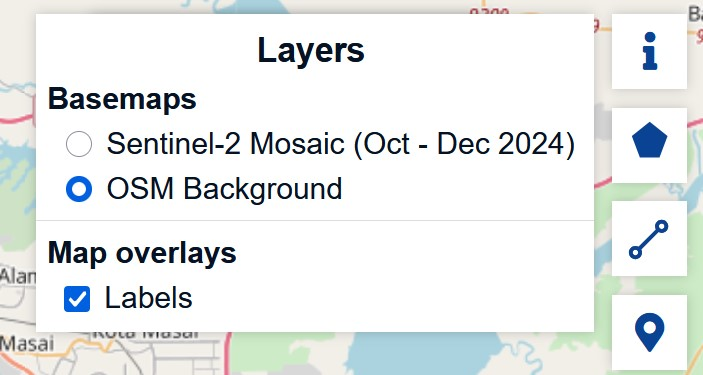
- Feel free to change the reference map by clicking on any one of them.
Next, we will select the area of interest.
- From the view window, click on Area mode button.
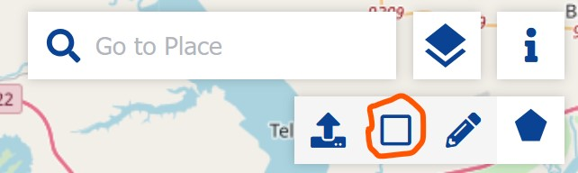
Position the mouse at the upper left corner of Singapore island.
Press of left button of the mouse, then drape to form a window as show on the screenshot below.
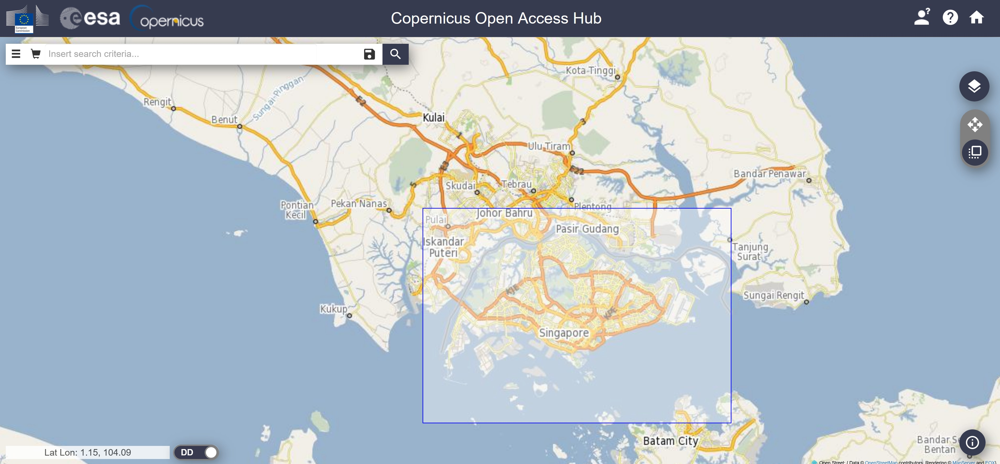
- Release the mouse.
Notice that the area of interest has been locked.
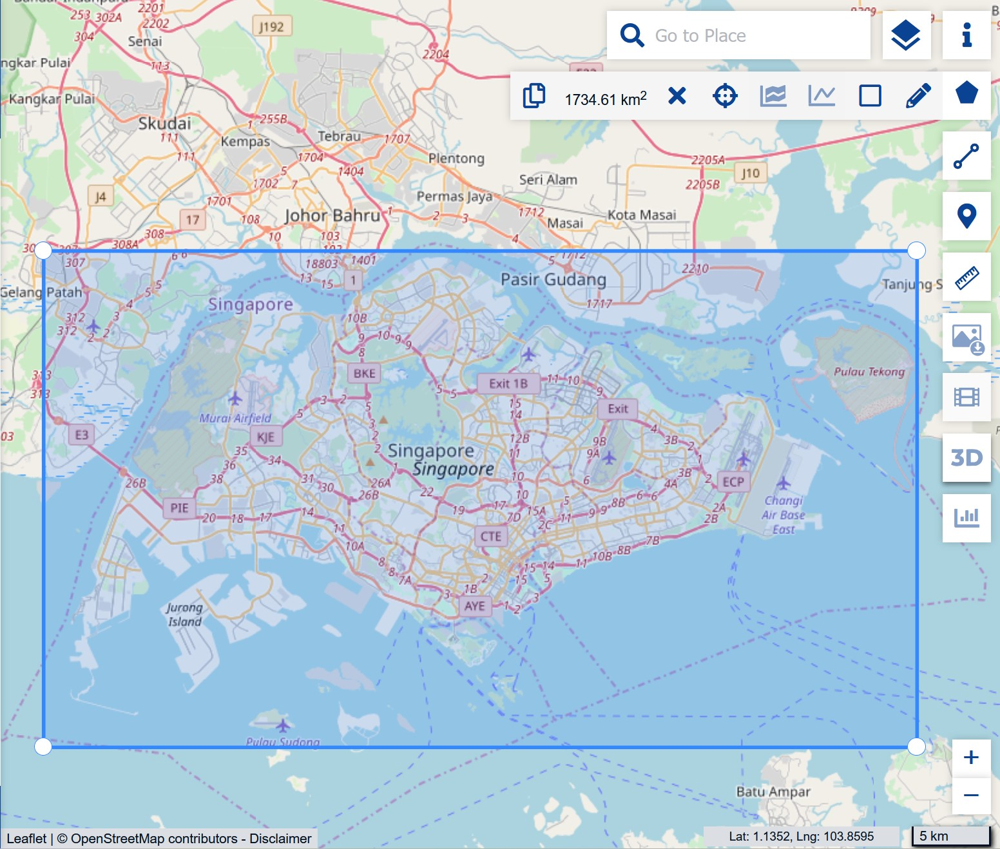
3.2.2 Step 2: Specifying search criteria
Next, we will specify the search criteria.
- Click on the Advanced Search button.
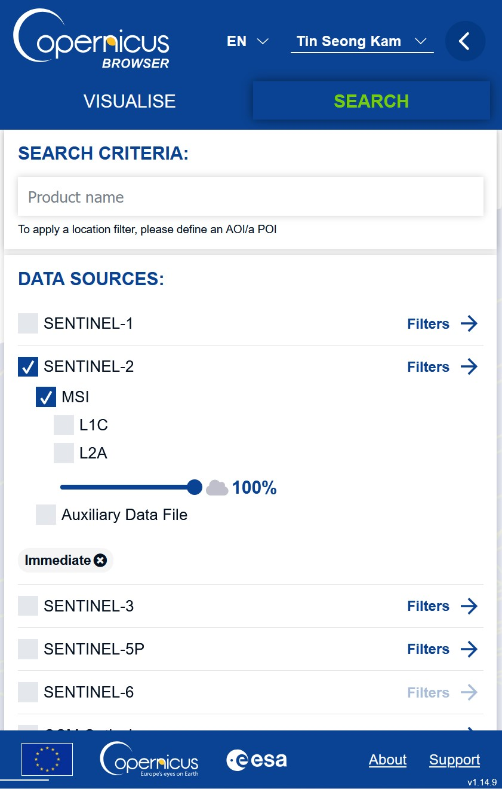
The Advanced Search panel appears.
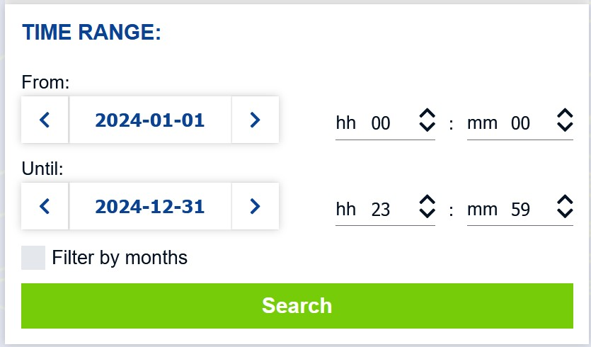
Let say we are interested to find Sentinel-2 data sets for the year 2018.
- For Sensing period, select 2018/01/01 as starting date and 2018/12/31 as the end date..
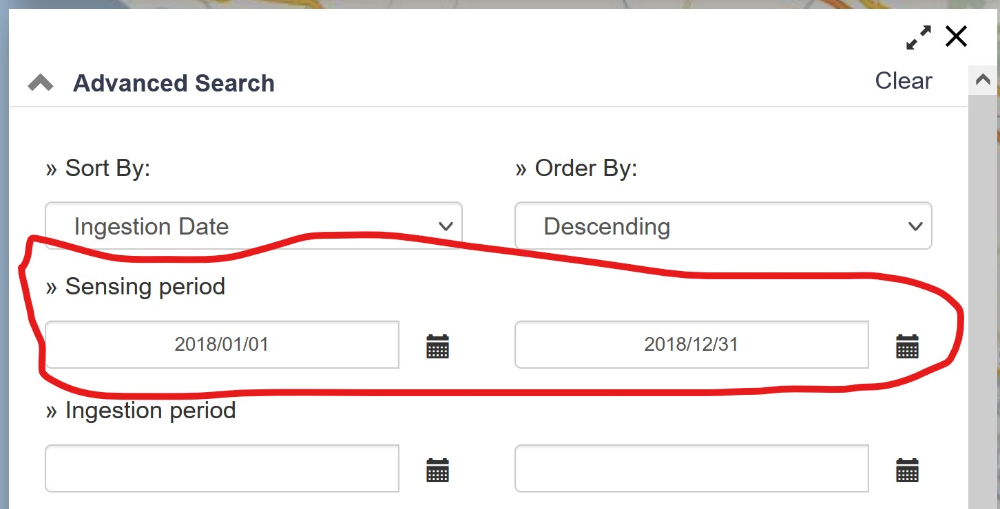
- Then click on the check-box in front of Mission: Sentinel 2.
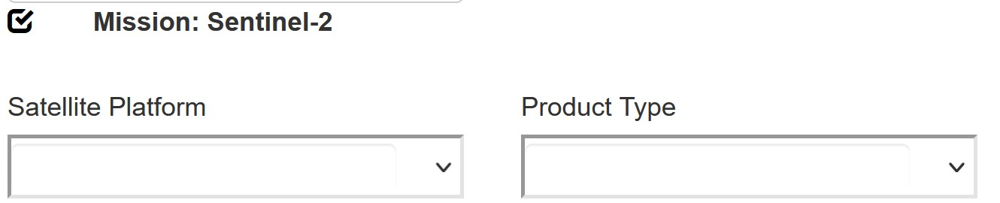
- Lastly, click on Search button to start the search.
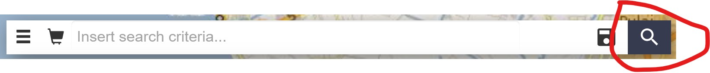
Within a second, the search results appear on the left panel.
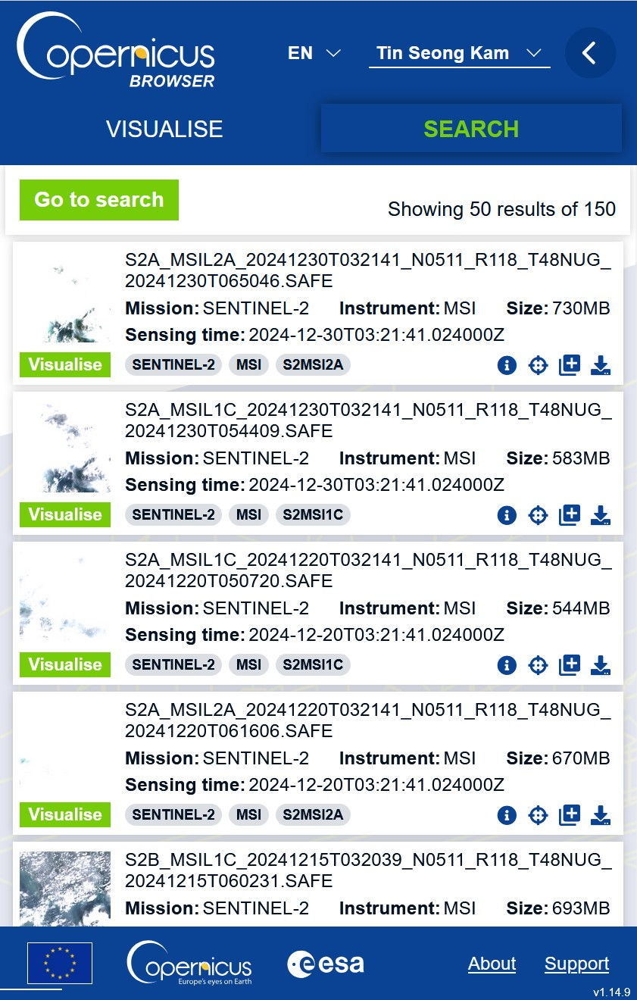
The list shows that there a total of 76 scene meet the search criteria.
3.2.3 Step 3: Downloading a selected scene
Let sat we are interested to download the scene taken on 2018/02/10.
- Navigate to the scene then click on View Product Detail button.
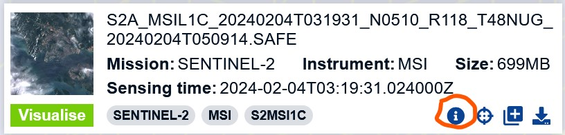
Scroll down to read the important information of the scene. For example, the report shows that the scene has relatively less cloud cover of 5.6%.
When you are ready to download the data set, click on the Close button to close the window.
At the left window, hover the mouse over the scene dated 2018/02/10. Click on Download button.
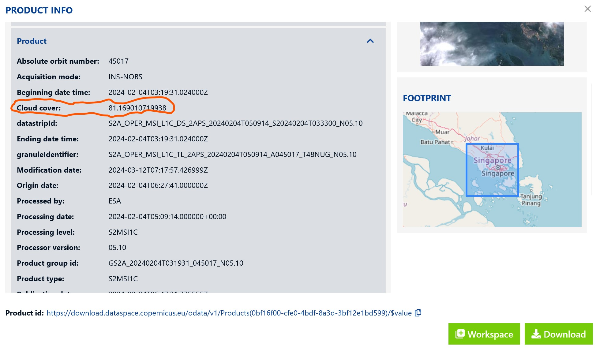
A pop-up window appears informing us that the offline product retrieval had been initiated and we should check our Cart to know when it will be ready.
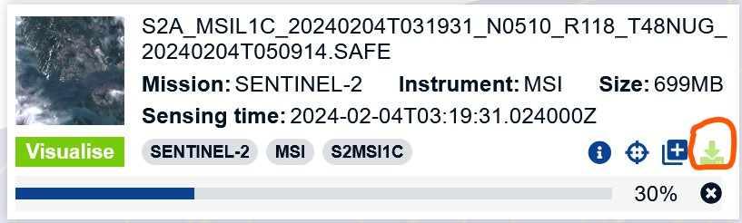
- Click on OK button to close the window.
Be patient, the data size is very large and will take at least an hour to download.
Gentle reminder: The downloaded data will be in zip file format. You need to unzip the file. It is also a good practice to keep the downloaded files in the project folder.